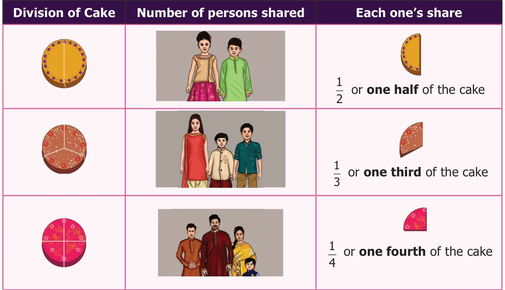
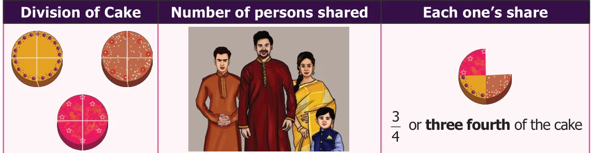
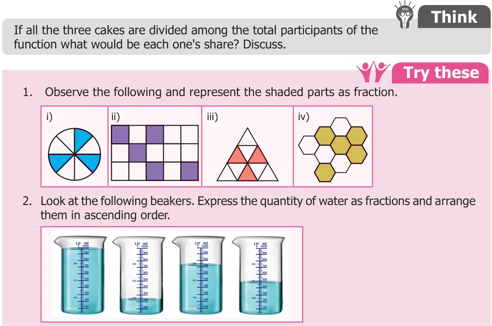
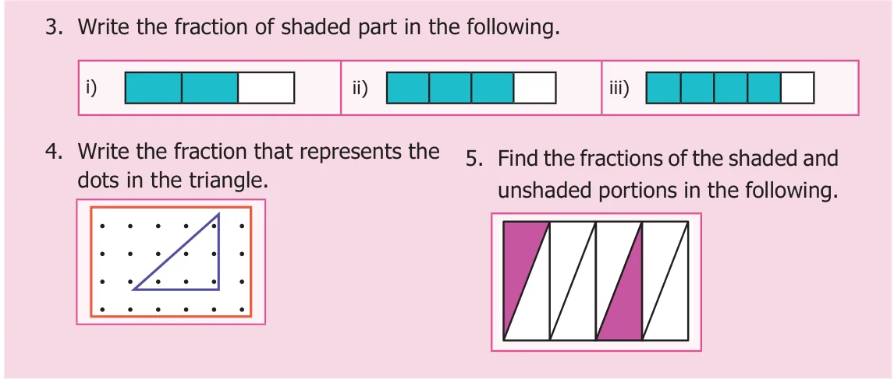
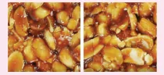
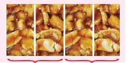
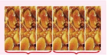
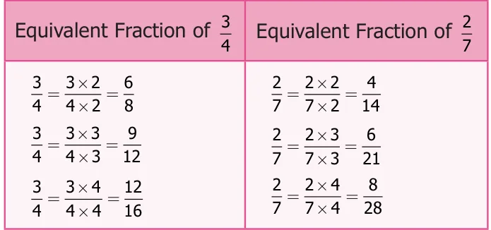
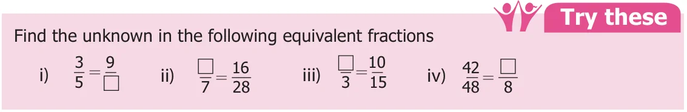

CHAPTER
1
FRACTIONS
Learning Objectives
●● To add and subtract unlike fractions. ●● To understand improper and mixed fractions. ●● To express improper fractions into mixed fractions and vice versa. ●● To do fundamental operations on mixed fractions.
Recap
I Fractions
On Anbu’s birthday function, his father, mother and uncle have bought one cake each of equal size. At the time of cutting a cake, two friends were present for the celebration. He divided the cake into 2 equal pieces and gave the pieces to them. After some time, three of his friends arrived. He took another cake and divided it into 3 equal pieces and gave the pieces to them. Still he has one more cake at home. Anbu wanted to share it among his four family members. Third cake is divided into 4 equal pieces and given to them. Following table shows how Anbu divided the cake equally according to the number of persons.

In the above situation, each of 3 cakes was divided equally according to the number of persons attended the function. When Anbu shared one cake to 4 persons, each one got quarter of the cake which was comparatively smaller than the share got by one person when it was divided equally between 2 and 3 persons. When the number of persons increases the size of the cake becomes smaller. Suppose all the three cakes of equal size are shared equally with the family members of Anbu, what would be each one’s share?

Each one would get \(\frac{3}{4}\) of the cake. Here we have divided the whole into equal parts, each part is called a Fraction. We say a fraction as selected part(s) out of total number of equal parts of an object or a group. Each one’s share of dividing one cake between 2, 3 and 4 persons respectively can be represented as follows.
\(\frac{1}{2} \frac{1}{3} \frac{1}{4}\)


II Equivalent Fractions
Murali has one peanut bar. He wants to share it equally with Rani.

So he divided it into two equal pieces, each one has got 1 piece out of 2, which is half of the peanut bar. They both decided to have half of their share \(\frac{1}{2} \frac{1}{2}\) in the morning break and another half in the evening break. Now the total number of pieces becomes 4. Each one has 2 pieces out of 4. That is \(\frac{2}{4} \frac{2}{4} \frac{2}{4}\) which is nothing but half of the peanut bar. Look at the figures. In both the type of sharing, they got only the same half of the peanut bar. Therefore, \(\frac{1}{2} = \frac{2}{4}\) . Hence, \(\frac{2}{4}\) is equivalent to \(\frac{1}{2}\) . \(\frac{3}{6} \frac{3}{6}\) If the peanut bar had been divided into 6 equal pieces, each one would have got \(\frac{3}{6}\) . What about each one’s share if it is divided into 8 equal pieces? \(\frac{4}{8}\) . We can observe that \(\frac{1234}{2468} = = =\) . How do we get these equivalent fractions of \(\frac{1}{2}\) ?


\(\frac{122}{224} \frac{133}{236}\)
\(\times = \times =\)
Hence, to get equivalent fractions of the given fraction, the numerator and denominator
are to be multiplied by the same number.
Activity
Take a rectangular paper. Fold it into two equal parts. Shade one part, write the fraction of it. Again fold it into two halves. Write the fraction for the shaded part. Continue this process 5 times and write the fraction of the shaded part. Establish the equivalent fractions of \(\frac{1}{2}\) in the folded paper to your friends.
Example 1 Find three equivalent fractions of \(\frac{3}{4}\) and \(\frac{2}{7}\) .

Solution
Equivalent fractions of \(\frac{3}{4}\) : \(\frac{3}{4} = \frac{6}{8} = \frac{9}{12} = \frac{12}{16}\) Equivalent fractions of \(\frac{2}{7}\) : \(\frac{2}{7} = \frac{4}{14} = \frac{6}{21} = \frac{8}{28}\)
